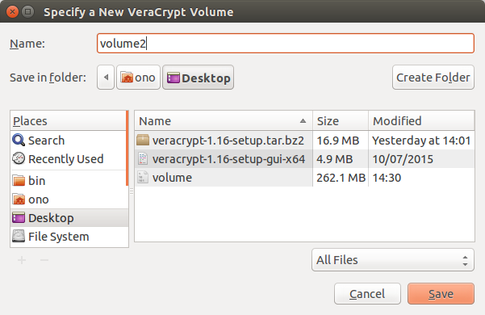
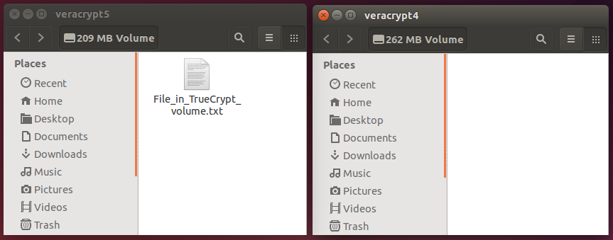
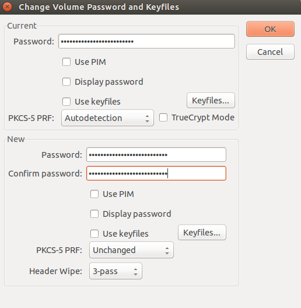

VeraCrypt для Linux – Храним файлы в безопасности
Обновлен10 August 2016
VeraCrypt шифрует ваши данные так, что посторонние не получат к ним доступ без пароля. Что-то вроде электронного сейфа, где можно хранить файлы и быть уверенным в их безопасности.
VeraCrypt – бесплатная программа для шифрования файлов. Это продолжение проекта TrueCrypt. Программа доступна для Microsoft Windows, Mac OS X и GNU Linux.
1.0 Что нужно знать о VeraCrypt перед началом работы
VeraCrypt шифрует файлы и защищает их с помощью пароля. Защищенный объем называется том. На компьютере он выглядит как подключенный диск. На самом деле, том находится внутри единственного файла – контейнера. Вы можете открывать (монтировать) и закрывать (размонтировать) контейнер VeraCrypt. Внутри контейнера файлы находятся в безопасности.
Программа также умеет шифровать диски целиком (защищая все пространство). В этом руководстве, однако, мы будем говорить только о файлах-контейнерах.
VeraCrypt использует шифрование на лету. Файл шифруется в тот момент, когда мы записываем его в том, и расшифровывается, когда мы считываем его. Вы можете копировать файлы в том VeraCrypt и обратно, как если бы вы работали с обычным диском или флешкой.
VeraCrypt поддерживает обычные тома и скрытые тома. Оба способа годятся для защиты данных, но скрытый том позволяет прятать самую важную информацию "позади" менее важных данных. Это поможет, если вы по тем или иным причинам будете вынуждены раскрыть свой пароль. Мы расскажем о том, как создавать и использовать оба типа томов.
Внимание: если вы забудете пароль, то потеряете доступ к данным! Восстановить забытый пароль нельзя. Имейте в виду, что использование шифрования в некоторых юрисдикциях противоречит закону.
Подробнее о VeraCrypt можно почитать здесь:
Во многих версиях GNU Linux, включая Ubuntu, полнодисковое шифрование – встроенная опция. Мы рекомендуем выбирать полнодисковое шифрование при установке Linux; это проще, чем включать шифрование позже, в процессе работы. Кроме того, в большинстве дистрибутивов Linux доступа дисковая утилита (Disk Utility), с помощью которой можно создать зашифрованный том на USB-носителе. В отличие от VeraCrypt, это хранилище можно будет использовать только под Linux. VeraCrypt позволяет работать с одним и тем же защищенным хранилищем в Linux, Mac OS X и Windows.
В Mac OS X для полнодискового шифрования существует встроенная программа FileVault (можно зашифровать не весь диск, а только корневую папку). Для Mac OS X также есть утилита Disk Utility, которая позволяет создавать зашифрованные тома на USB-флешках; доступ к ним впоследствии возможен только с компьютеров Mac.
"Продвинутые" версии Windows (начиная с семейства Windows 7) включают утилиту BitLocker для полнодискового шифрования. Речь идет о Windows 7 Ultimate, Windows 7 Enterprise, Windows 8 Pro, Windows 8 Enterprise и Windows 10 Pro.
Как FileVault (для Mac OS X), так и BitLocker (для Windows) – проприетарные программы. Их надежность не может быть подтверждена независимым аудитом. Тем не менее, есть смысл их использовать. VeraCrypt хорош как дополнение для переноса наиболее важных файлов между разными платформами (Linux, Mac OS X и Windows).
Перед тем, как скачивать VeraCrypt, проверим версию нашей операционной системы: 32-битная или 64-битная?
Шаг 1. Запустите Терминал.
Шаг 2. Выполните в Терминале следующую команду:
uname –m
Шаг 3. Откройте страницу для скачивания VeraCrypt https://www.veracrypt.fr/en/Downloads.html.
Шаг 4. Под заголовком Other Available Downloads выберите самую свежую версию программы VeraCrypt Linux Setup. (На момент написания этого текста – VeraCrypt Linux Setup 1.17, но будут версии новее).
Скачайте VeraCrypt и установите его, следуя нашему описанию.
Шаг 5. Запустите менеджер файлов и перейдите к сохраненному архиву-дистрибутиву VeraCrypt (см. шаг 4) (на момент написания этого текста – veracrypt-1.17-setup.tar.bz2)
Изображение 1. Архив-дистрибутив VeraCrypt
Шаг 6. Дважды нажмите на скачанный (шаг 4) файл, чтобы увидеть его содержимое.
Изображение 2. Дистрибутив VeraCrypt, открытый с помощью Менеджера архивов
Шаг 7. Щелкните правой кнопкой мыши по файлу-установщику VeraCrypt (в соответствии с вашей системой) и выберите Распаковать.
Изображение 3. Выбор места для распаковки дистрибутива VeraCrypt
Шаг 8. Выберите место для дистрибутива VeraCrypt и нажмите [Распаковать]. (Мы будем делать это на Рабочем столе).
Изображение 4. Менеджер архивов сообщает, что VeraCrypt распакован
Шаг 9. Когда распаковка завершена, нажмите [Закрыть] и закройте Менеджер архивов.
Шаг 10. Перейдите в папку, куда распаковали дистрибутив VeraCrypt. (Мы распаковываем файл veracrypt-1.17-setup-gui-x64 на Рабочий стол).
Изображение 5. Распакованный файл VeraCrypt
Чтобы запустить установку, возможно, придется изменить настройки менеджера файлов. Этот процесс описан в шагах 11 – 14.
Изображение 6. Настройки файлового менеджера Nautilus
Шаг 11. Выберите в меню файлового менеджера пункт Правка – Параметры.
Шаг 12. Откройте вкладку Поведение.
Изображение 7. Вкладка Поведение в менеджере файлов
Шаг 13. Убедитесь, что в пункте Исполняемые текстовые файлы выбрано Каждый раз спрашивать.
Шаг 14. Нажмите [Закрыть].
Шаг 15. Двойной щелчок по файлу-дистрибутиву VeraCrypt (в нашем примере veracrypt-1.17-setup-gui-x64). Вам предложат на выбор Показать или Запустить.
Изображение 8. Варианты при нажатии на исполняемый текстовый файл
Шаг 16. Выберите [Запустить], чтобы запустить установку VeraCrypt.
Изображение 9. Установка VeraCrypt
Шаг 17. Нажмите [Установить VeraCrypt] для перехода к лицензионному соглашению.
Изображение 10. Согласие с лицензией VeraCrypt
Шаг 18. Прочтите условия лицензии VeraCrypt и нажмите [I accept and agree to be bound by the license terms].
VeraCrypt коротко объясняет, как удалить программу.
Изображение 11. Как удалить VeraCrypt
Шаг 19. Нажмите [OK].
Шаг 20. Наберите пароль, который используете для входа в компьютер, и нажмите Enter, чтобы продолжить установку VeraCrypt.
Изображение 12. Установка VeraCrypt
Шаг 21. Нажмите Enter, чтобы закрыть окно (изображение 8).
Примечание. В дополнение к нашему руководству можно воспользоваться рекомендациями для начинающих VeraCrypt Beginner's Tutorial.
VeraCrypt позволяет создавать тома двух типов: скрытый и обычный.
Мы расскажем, как создать обычный том. Если вы хотите создать скрытый том, пройдите этот раздел до конца, затем перейдите к части Создание скрытого тома.
Чтобы создать обычный том VeraCrypt, выполните следующие шаги.
Шаг 1. Запустите VeraCrypt. Откроется главное окно программы.
Изображение 1. Главное окно VeraCrypt
Шаг 2. Нажмите [Create Volume], чтобы запустить мастер VeraCrypt Volume Creation Wizard.
Изображение 2. Мастер создания томов
Файл-контейнер VeraCrypt – зашифрованный том, который хранится в одном файле. Этот контейнер можно переименовывать, перемещать, копировать или удалять, как любой иной файл. Мы создадим файл-контейнер. Если хотите узнать больше о другой опции, пожалуйста, обратитесь к документации VeraCrypt.
Шаг 3. Нажмите [Next], чтобы выбрать тип создаваемого тома.
Изображение 3. Окно выбора типа тома
В этом окне можно выбрать, какой том вы хотите создать: обычный или скрытый.
Примечание. Подробнее о том, как создать скрытый том, можно узнать в части нашего руководства Создание скрытого тома.
Шаг 4. Убедитесь, что выбран Standard VeraCrypt Volume. Нажмите кнопку [Next], чтобы выбрать название и место для контейнера VeraCrypt.
Изображение 4. Мастер создания томов – выбор места
Шаг 5. Нажмите кнопку [Select File…], чтобы выбрать место для контейнера VeraCrypt и название файла.
Изображение 5. Выбор места и названия для контейнера
Шаг 6. Укажите папку, где собираетесь создать свой контейнер.
Шаг 7. Выберите имя файла для вашего контейнера и укажите его в поле в верхней части окна.
Примечание. Не выбирайте уже существующий файл! Не забудьте, где разместили свой контейнер и как его назвали.
В нашем примере мы создаем контейнер (том) на Рабочем столе, но ваш контейнер может иметь любое название и файловое расширение. Например, вы можете назвать его recipes.docx или holidays.mpg в надежде на то, что случайный человек подумает, будто это документ Microsoft Word или видеофайл. Это один из способов замаскировать наличие контейнера VeraCrypt, хотя он вряд ли сработает против того, у кого достаточно времени и ресурсов для внимательного изучения вашего устройства.
Если вы хотите создать контейнер VeraCrypt на USB-устройстве (например, флешке), просто откройте нужную папку на ней (не на жестком диске компьютера) перед тем, как выбрать имя файла.
Шаг 8. Когда выбрали место и название файла для контейнера VeraCrypt, нажмите кнопку [Save].
Изображение 6. Название и место для контейнера
Шаг 9. Нажмите кнопку [Next] для выбора параметров шифрования.
Изображение 7. Мастер создания томов, окно параметров шифрования
Здесь вы можете выбрать метод (алгоритм) для шифрования и расшифровки файлов внутри вашего контейнера VeraCrypt. Параметры по умолчанию можно считать безопасными, есть смысл ничего не менять.
Шаг 10. Нажмите кнопку [Next] для выбора размера тома.
Изображение 8. Выбор размера тома
Окно Volume Size позволяет указать размер создаваемого контейнера. В качестве примера мы создадим контейнер 250 Мб, но вы можете выбрать другой размер. Оцените, сколько файлов вы туда хотите записать, и, что более важно, типы этих файлов. Например, изображения и видео могут очень быстро заполнить небольшой контейнер VeraCrypt.
Подсказка. Если вы планируете записывать резервные копии на CD, лучше выбрать размер контейнера 700 Мб или меньше. Для копирования на DVD контейнер должен быть не более 4.5 Гб. Намерены загружать контейнер в облачное хранилище? Попробуйте прикинуть разумный размер, учитывая скорость вашего соединения с интернетом.
Шаг 11. Укажите размер тома, который собираетесь создать. Убедитесь, что выбрали правильное значение в килобайтах, мегабайтах, гигабайтах или терабайтах.
Шаг 12. Нажмите кнопку [Next] для выбора пароля.
Изображение 9: Мастер создания томов, окно выбора пароля
ВАЖНО. Выбор сложного пароля – один из самых ответственных шагов при создании тома VeraCrypt. Чем серьезнее пароль, тем лучше. Если хотите узнать больше о способах создания и запоминания хороших паролей, пожалуйста, загляните в раздел Как создавать и хранить надежные пароли и в руководство по KeePassX. Кнопка "Next" останется серой, пока вы не введете пароль дважды. Если пароль слабый, вы увидите предупреждение. Подумайте, не следует ли его изменить? Хотя VeraCrypt "согласится" с любым вашим паролем, информацию нельзя считать защищенной, если пароль слабый.
Шаг 13. Введите пароль и подтвердите его в поле Confirm.
Шаг 14. Нажмите кнопку [Next].
Изображение 10. Мастер создания томов, параметры форматирования тома
Примечание. По умолчанию предлагается система FAT. Она подойдет для большинства ситуаций и совместима с компьютерами Linux, Windows и Mac OS X. Но если вы намерены хранить файлы по 4 Гб и больше, вам лучше выбрать другую файловую систему. Linux Ext2 будет работать только на компьютерах Linux, а NTFS – на компьютерах Windows и большинстве компьютеров Linux.
Шаг 15. Нажмите [Next] после выбора нужной файловой системы.
Изображение 11. Мастер создания томов, форматирование тома
VeraCrypt готов к созданию обычного зашифрованного тома внутри файла-контейнера. Если вы станете перемещать курсор мыши внутри окна форматирования тома, начнется генерирование случайных данных. Это поможет сделать шифрование более надежным.
Шаг 16. Нажмите кнопку [Format], чтобы начать создание обычного тома.
VeraCrypt сообщит, когда процесс завершится.
Изображение 12. Том успешно создан
Шаг 17. Нажмите кнопку [OK].
Изображение 13. Можно завершить мастер томов или создать новый том
Шаг 18. Нажмите кнопку [Exit], чтобы закрыть Мастер создания томов VeraCrypt и вернуться в главное окно программы. (Если вы нажмете [Next], VeraCrypt начнет создавать еще один том).
Теперь можете видеть файл-контейнер 250 Мб в том месте, которое указали на шаге 6.
В программе VeraCrypt скрытый том помещается в зашифрованный обычный том. О наличии скрытого тома нельзя просто догадаться. Даже когда ваш обычный том смонтирован, невозможно определить, существует ли внутри скрытый том, если не знать пароль к нему. Пароли для обычного и скрытого томов разные.
Скрытый том в некоторой степени похож на потайное отделение запертого чемодана. В самом чемодане вы храните файлы для декорации. Если они достанутся злоумышленнику (вместе с чемоданом), не случится большой беды. Самые важные файлы хранятся в потайном отделении. Смысл скрытого тома – сохранить в секрете само его существование (и, соответственно, все файлы, которые в нем находятся), даже если вам придется выдать пароль к обычному тому. Тот, кто требует пароль к вашим файлам, получает его, видит файлы и остается удовлетворенным. Чтобы этот прием работал – наши советы:
Как упоминалось выше, скрытый том технически находится внутри обычного тома. Вот почему VeraCrypt иногда называет их соответственно "внутренним" и "внешним". К счастью, нет нужды монтировать внешний том, чтобы добраться до внутреннего. VeraCrypt позволяет оперировать двумя разными паролями: один открывает внешний обычный том, другой – внутренний скрытый том.
Создадим скрытый том по шагам.
Шаг 1. Запустите VeraCrypt. Откроется главное окно программы.
Изображение 1. Главное окно VeraCrypt
Шаг 2. Нажмите кнопку [Create Volume], чтобы запустить мастер создания томов VeraCrypt.
Изображение 2. Мастер создания томов
Файл-контейнер VeraCrypt – зашифрованный том, который хранится в одном файле. Этот контейнер можно переименовывать, перемещать, копировать или удалять, как любой другой файл. Если вы хотите узнать больше о другой опции, пожалуйста, обратитесь к документации VeraCrypt.
Шаг 3. Нажмите кнопку [Next], чтобы выбрать тип тома.
Изображение 3. Выбор типа тома
Шаг 4. Выберите Hidden VeraCrypt volume* и нажмите кнопку [Next].
Изображение 4. Выбор места
Шаг 5. Нажмите кнопку [Select File...], чтобы выбрать место для нового контейнера VeraCrypt, внутри которого будут и обычный том, и скрытый том.
Изображение 5. Выбор места и названия для контейнера
Шаг 6. Перейдите в папку, где вы собираетесь создать свой контейнер.
Шаг 7. Выберите имя файла для вашего контейнера и укажите его в поле в верхней части окна.
Примечание. Не выбирайте уже существующий файл! Не забудьте, где разместили свой контейнер и как его назвали.
В данном примере мы создаем контейнер с названием volume2 на Рабочем столе, но ваш контейнер может иметь любое названием и файловое расширение. Например, вы можете назвать его recipes.docx или holidays.mpg в надежде на то, что случайный человек подумает, будто это документ Microsoft Word или видеофайл. Это один из способов замаскировать наличие контейнера VeraCrypt, хотя он вряд ли сработает против того, у кого достаточно времени и ресурсов для внимательного изучения вашего устройства.
Если вы хотите создать контейнер VeraCrypt на USB-устройстве (например, флешке), просто откройте нужную папку на ней (не на жестком диске компьютера) перед тем, как выбрать имя файла.
Шаг 8. Когда выбрали место и название файла для контейнера VeraCrypt, нажмите [Next]:
Изображение 6. Название и место для контейнера
Шаг 9. Нажмите [Next] для настройки параметров шифрования.
Изображение 7. Настройки шифрования для внешнего тома VeraCrypt
Здесь вы можете выбрать метод (алгоритм) для шифрования и расшифровки файлов внутри вашего контейнера VeraCrypt. Параметры по умолчанию можно считать безопасными, есть смысл ничего не менять.
Шаг 10. Нажмите кнопку [Next] для выбора размера тома.
Изображение 8. Размер внешнего тома VeraCrypt
В этом окне нужно указать размер создаваемого контейнера. В качестве примера мы создадим контейнер 250 Мб, но вы можете выбрать другой размер. Оцените, сколько файлов вы туда хотите записать, и, что более важно, каких типов эти файлы. Например, изображения и видео могут очень быстро заполнить небольшой контейнер VeraCrypt.
Подсказка. Если вы планируете записывать резервные копии на CD, лучше выбрать размер контейнера 700 Мб или меньше. Для копирования на DVD контейнер должен быть не более 4.5 Гб. Намерены загружать контейнер в облачное хранилище? Попробуйте прикинуть разумный размер, учитывая скорость вашего соединения с интернетом.
Шаг 11. Введите размер тома, который собираетесь создать. Убедитесь, что выбрали правильное значение в килобайтах, мегабайтах, гигабайтах или терабайтах.
Шаг 12. Нажмите [Next] для выбора пароля.
Изображение 9. Выбор пароля для внешнего тома VeraCrypt
ВАЖНО. Хотя это и пароль для "декорации", он все равно должен быть надежным. Если хотите узнать больше о способах создания и запоминания хороших паролей, пожалуйста, загляните в раздел Как создавать и хранить надежные пароли и в руководство по KeePassX. Кнопка "Next" останется серой, пока вы не введете пароль дважды. Если пароль слабый, вы увидите предупреждение. Подумайте, не следует ли его изменить? Хотя VeraCrypt "согласится" с любым вашим паролем, информацию нельзя считать защищенной, если пароль слабый.
Шаг 13. Введите пароль и подтвердите его в поле Confirm password.
Шаг 14. Нажмите кнопку [Next].
Изображение 10. Мастер создания томов, окно VeraCrypt Outer Volume Format
Программа VeraCrypt готова к созданию обычного тома в файле-контейнере. Скрытый том будем создавать позже внутри этого обычного тома. Если вы наведете курсор мыши на окно Volume Creation Wizard, начнется генерирование случайных данных, которые помогают сделать шифрование более надежным.
Шаг 15. Нажмите [Format] для создания внешнего тома. Понадобятся права администратора.
Изображение 11. Права администратора
Шаг 16. Наберите пароль для входа в компьютер во всплывающем окне и нажмите [OK].
Когда VeraCrypt завершит создание внешнего тома, появится окно Outer Volume Contents. Также может быть автоматически открыто содержание тома VeraCrypt (пока он пуст).
Изображение 12. Окно Outer Volume Contents
Нам советуют добавить некоторое количество файлов "для декорации" во внешний контейнер. При желании вы сможете сделать это позже.
Шаг 17. Нажмите [Next], чтобы определить, сколько места доступно для скрытого тома.
Изображение 13. Окно скрытого тома VeraCrypt
Шаг 18. Нажмите [Next], чтобы выбрать параметры шифрования для вашего скрытого тома.
Изображение 14. Параметры шифрования для скрытого тома VeraCrypt
Можно выбрать метод (алгоритм) для шифрования и расшифровки файлов внутри вашего скрытого тома. Параметры по умолчанию можно считать безопасными, есть смысл ничего не менять.
Шаг 19. Нажмите [Next], чтобы выбрать размер скрытого тома.
Изображение 15. Размер скрытого тома VeraCrypt
Шаг 20. Укажите размер скрытого тома, который хотите создать. Убедитесь, что вводите корректное значение в килобайтах (мегабайтах, гигабайтах или терабайтах). Скрытый том не может быть больше доступного свободного пространства во внешнем томе.
Шаг 21. Нажмите [Next] для выбора размера скрытого тома.
Изображение 16. Пароль для скрытого тома VeraCrypt
Шаг 22. Придумайте надежный пароль для защиты скрытого тома и введите его в поле. Повторите его в поле Confirm password.
Примечание. Пароль для скрытого тома должен отличаться от пароля для обычного тома. Если вы используете тот же пароль, то не получите доступ к скрытому тому.
ВАЖНО. Выбор сложного пароля (особенно для скрытого тома) – один из самых ответственных шагов при создании тома VeraCrypt. Чем серьезнее пароль для скрытого тома, тем лучше. Возможно, вы не захотите записывать именно этот пароль в менеджер паролей вроде KeePass; попробуйте придумать что-то и надежное, и хорошо запоминающееся.
Шаг 23. Нажмите [Next], чтобы выбрать файловую систему.
Изображение 17. Параметры форматирования VeraCrypt
Примечание. По умолчанию предлагается система FAT. Она подойдет для большинства ситуаций и совместима с компьютерами Linux, Windows и Mac OS X. Но если вы намерены хранить файлы по 4 Гб и больше, вам лучше выбрать другую файловую систему. Linux Ext2 будет работать только на компьютерах Linux, а NTFS – на компьютерах Windows и большинстве компьютеров Linux.
Шаг 24. Нажмите [Next] после выбора нужной файловой системы.
Изображение 18. Окно форматирования скрытого тома
Шаг 25. Нажмите [Format], чтобы приступить к созданию скрытого тома.
VeraCrypt сообщит, когда процесс создания скрытого тома завершится.
Изображение 19. VeraCrypt предупреждает о защите скрытого тома
Шаг 26. Нажмите кнопку [OK] и увидите сообщение, что том создан.
Изображение 20. Скрытый том VeraCrypt создан
Шаг 27. Нажмите [Exit], чтобы закрыть Мастер создания томов VeraCrypt и вернуться в главное окно программы. (Если нажмете [Next], VeraCrypt начнет создавать еще один том).
Теперь можно хранить файлы в скрытом томе. О его существовании не узнает даже тот, кто получит пароль к обычному тому.
5. Использование томов VeraCrypt
В этом разделе мы покажем, как использовать обычный том и скрытый том VeraCrypt для Linux.
Понятие смонтировать в программе VeraCrypt означает "открыть том для использования". Когда том успешно смонтирован, он отображается в системе как подключенный портативный диск. Вы можете просматривать, создавать, изменять, удалять папки и файлы на этом диске. Когда закончите работу, размонтируйте том, и новый "диск" исчезнет из системы. Монтировать скрытый том можно точно так же, как и обычный том. В зависимости от введенного пароля VeraCrypt определит, какой том нужно монтировать: обычный или скрытый.
Как cмонтировать том:
Шаг 1. Откройте VeraCrypt. Появится главное окно программы:
Изображение 1. Главное окно VeraCrypt
Шаг 2. Выберите любую строчку из списка в главном окне VeraCrypt:
Изображение 2. Главное окно VeraCrypt со списком доступных позиций
Примечание. В нашем примере том будет смонтирован под номером 4. Вы можете выбирать любой номер всякий раз, как монтируете том.
Шаг 3. Нажмите кнопку [Select File…] и найдите свой файл-контейнер VeraCrypt.
Изображение 3. Выбор файла-контейнера VeraCrypt
Шаг 4. Нажмите кнопку [Open], чтобы вернуться в главное окно VeraCrypt. Место вашего файла-контейнера будет отображаться слева от кнопки [Select File...].
Изображение 3. Главное окно VeraCrypt с выбранным контейнером
Шаг 5. Нажмите кнопку [Mount], чтобы ввести пароль.
Изображение 4. Окно ввода пароля
Шаг 6. Введите пароль в поле Password.
Если в контейнере нет скрытого тома, просто введите пароль к обычному тому и нажмите [OK]. Если в контейнере есть скрытый том, выберите один из вариантов:
Шаг 7. Нажмите [OK], чтобы смонтировать том. Для этого понадобятся права администратора.
Изображение 5. Права администратора
Шаг 8. Введите пароль для входа в компьютер и нажмите Enter.
Если пароль для тома VeraCrypt или для входа в компьютер окажется неправильным, VeraCrypt предложит повторить. Если оба пароля верные, VeraCrypt смонтирует ваш зашифрованный том.
Изображение 6. Главное окно VeraCrypt со смонтированным томом
Шаг 9. Войдите в смонтированный том.
Есть два способа это сделать:
Том на изображении ниже пока пуст. После записи файлов они будут доступны всякий раз после монтирования тома.
Изображение 7. Внутри смонтированного тома VeraCrypt
Смонтированный том выглядит и используется как внешнее устройство хранения данных – но полностью зашифрованное. Вы можете открывать и копировать файлы, как с USB-флешкой. Например, можно перетаскивать файлы мышью или сохранять их на новый "диск" прямо из приложения. При копировании, перемещении или сохранении файла в смонтированном томе этот файл автоматически шифруется. Когда вы извлекаете файл из тома VeraCrypt, он автоматически расшифровывается. Если компьютер неожиданно выключится, зашифрованный том окажется вне доступа до тех пор, пока не будет смонтирован снова.
ВАЖНО. Пока ваш том VeraCrypt смонтирован, файлы внутри него не защищены и доступны каждому, кто в этот момент доберется до вашего компьютера. Чтобы защитить важные данные, размонтируйте том, если перестали с ним работать. Помните об этом, когда отлучаетесь от компьютера, а также при вероятности кражи или изъятия устройства. Оставлять смонтированный том – все равно что оставлять дверцу сейфа широко открытой. Если вы выключите или перезагрузите компьютер, когда том смонтирован, он станет недоступен, пока его не смонтируют снова. Есть смысл попрактиковаться в этих действиях, добиваясь быстроты.
Понятие размонтировать в программе VeraCrypt означает "сделать том недоступным".
Шаг 1. В главном окне VeraCrypt выберите смонтированный том.
Изображение 1. Выбор обычного тома для размонтирования
Шаг 2. Нажмите кнопку [Dismount], чтобы размонтировать том VeraCrypt.
Чтобы увидеть содержимое обычного тома после размонтирования, нужно смонтировать том заново.
ВАЖНО. Убедитесь, что размонтировали все тома VeraCrypt перед тем, как:
Шаг 3. Закройте VeraCrypt.
5.3. Защита скрытого тома от изменений во внешнем томе
Как уже говорилось в части Создание скрытого тома, при монтировании тома VeraCrypt вы можете выбрать опцию Protect hidden volume against damage caused by writing to outer volume. Тогда можно добавлять "декоративные" файлы в обычный том, не рискуя случайно удалить или повредить файлы в скрытом томе. Вам придется вводить оба пароля (к обычному тому и скрытому тому). Таким образом, существование скрытого тома станет явным. Если вы этого не хотите, описанный режим защиты нужно отключить.
Когда обновляете "декоративные" файлы в обстановке, где нет посторонних глаз, есть смысл всегда включать защиту.
Чтобы использовать режим Protect hidden volume:
Шаг 1. Выберите строчку из списка в главном окне VeraCrypt.
Изображение 1. Главное окно VeraCrypt с доступными дисками
Шаг 2. Нажмите кнопку [Select file...] для выбора файла-контейнера VeraCrypt.
Изображение 2. Выбор файла-контейнера VeraCrypt
Шаг 3. Нажмите кнопку [Open], чтобы вернуться в главное окно VeraCrypt. Место вашего файла-контейнера будет отображаться слева от кнопки [Select File...].
Изображение 3. Главное окно VeraCrypt с выбранным контейнером
Шаг 4. Нажмите кнопку [Mount], чтобы ввести пароль.
Изображение 4. Окно ввода пароля
Шаг 5. Введите пароль к внешнему тому в поле Password, как если бы собирались смонтировать его обычным образом, но не нажимайте кнопку [OK].
Шаг 6. Вместо этого нажмите кнопку [Options]. Это позволит защитить скрытый том при изменении файлов в обычном томе.
Изображение 5. Защита скрытого тома при монтировании внешнего тома
Шаг 7. Отметьте пункт Protect hidden volume against damage caused by writing to outer volume.
Шаг 8. Введите пароль для скрытого тома.
Шаг 9. Нажмите кнопку [OK].
Шаг 10. VeraCrypt может запросить ваш системный пароль. Если это произойдет, введите пароль для входа в компьютер и нажмите [OK].
VeraCrypt даст знать, когда обычный том будет смонтирован с защитой скрытого тома от случайных повреждений.
Изображение 6. Сообщение VeraCrypt о защите скрытого тома
Шаг 11. Нажмите кнопку [OK], чтобы вернуться в главное окно VeraCrypt.
Изображение 7. Главное окно VeraCrypt
Шаг 12. Войдите в смонтированный том.
Как и в обычном случае, есть два способа это сделать:
Том пока пуст. Когда вы запишете "декоративные" файлы в обычный том, они будут доступны всякий раз после монтирования тома. Если вы защитили свой скрытый том так, как мы описали выше, можете добавлять и изменять файлы без опасения повредить содержимое скрытого тома.
Изображение 8. Внутри смонтированного обычного тома VeraCrypt с защищенным скрытым томом
Когда вы завершили работу в обычном томе, можно размонтировать его как обычно, см. Размонтирование тома. Когда будете монтировать том в следующий раз, опция Protect hidden volume against damage caused by writing to outer volume будет (по умолчанию) отключена.
6. Работа с контейнером VeraCrypt
В этой части вы узнаете, как импортировать содержание из тома TrueCrypt и как менять пароли к томам.
6.1. Импорт данных из контейнера TrueCrypt
VeraCrypt умеет монтировать тома TrueCrypt. Поскольку сам TrueCrypt больше не поддерживается, возможно, вы захотите побыстрее перенести файлы из тома TrueCrypt в том VeraCrypt.
По первому пункту можно почитать Создание обычного тома (и, если нужно, Создание скрытого тома). Далее мы предполагаем, что у вас уже есть один или больше подходящих томов VeraCrypt. Следующие шаги описывают процесс перемещения файлов из обычного тома TrueCrypt в обычный том VeraCrypt, который уже смонтирован.
Если у вас файлы и в обычном, и в скрытом томах TrueCrypt, убедитесь, что соответствующие тома VeraCrypt достаточны по размеру, затем выполните шаги дважды: для обычного тома и для скрытого тома. Не забудьте защитить содержимое скрытого тома VeraCrypt, когда будете копировать данные в обычный том.
В главном окне VeraCrypt при смонтированном новом томе VeraCrypt выполните следующие шаги.
Шаг 1. Нажмите на позиции, которая еще не занята смонтированным томом VeraCrypt.
Изображение 1. Главное окно VeraCrypt и смонтированный том
Шаг 2. Нажмите кнопку [Select File…] и найдите ваш контейнер TrueCrypt.
Изображение 2. Контейнер TrueCrypt
Шаг 3. Нажмите [Open], чтобы вернуться в главное окно VeraCrypt. Место вашего файла-контейнера будет отображаться слева от кнопки [Select File...].
Изображение 3. Главное окно VeraCrypt с выбранным контейнером TrueCrypt
Шаг 4. Нажмите кнопку [Mount].
Изображение 4. Окно пароля VeraCrypt в режиме TrueCrypt
Шаг 6. Выберите опцию TrueCrypt Mode.
Шаг 7. Введите пароль для вашего тома TrueCrypt.
Шаг 8. Нажмите кнопку [OK], чтобы смонтировать том TrueCrypt.
Изображение 5. Главное окно VeraCrypt и оба смонтированных тома
Шаг 9. Щелкните дважды на строчке смонтированного тома TrueCrypt, чтобы войти в него.
Шаг 10. Вернитесь в главное окно и дважды щелкните по строчке смонтированного тома VeraCrypt, чтобы войти в него.
Изображение 6. Содержимое обоих томов
Шаг 11. Выберите файлы в томе TrueCrypt и перетащите их в том VeraCrypt.
Изображение 7. Содержимое обоих томов после копирования данных из тома TrueCrypt в том VeraCrypt
Когда копирование завершится, нужно размонтировать оба тома.
Шаг 12. Вернитесь в главное окно VeraCrypt.
Шаг 13. Выберите том TrueCrypt.
Изображение 8. Выбор тома TrueCrypt для размонтирования
Шаг 14. Нажмите кнопку [Dismount], чтобы размонтировать том TrueCrypt.
Шаг 15. Выберите том VeraCrypt.
Изображение 9: Выбор тома VeraCrypt для размонтирования
Шаг 16. Нажмите [Dismount], чтобы размонтировать том VeraCrypt.
Изображение 10. Главное окно VeraCrypt, оба тома размонтированы
6.2. Изменение пароля для контейнера VeraCrypt
Чтобы изменить пароль к тому VeraCrypt, начните с главного окна и следуйте шагам, описанным ниже. Эти шаги относятся и к обычному тому, и к скрытому тому в контейнере VeraCrypt. Если вы хотите изменить оба пароля, нужно пройти это дважды.
Изображение 1. Главное окно VeraCrypt
Шаг 1. Нажмите кнопку [Select File...], чтобы выбрать контейнер, для которого нужно изменить пароль.
Изображение 2. Выбор контейнера VeraCrypt
Шаг 2. Выберите файл-контейнер и нажмите кнопку [Open], чтобы вернуться в главное окно.
Изображение 3. Главное окно VeraCrypt с выбранным контейнером
Шаг 3. Нажмите кнопку [Volumes Tools...] и выберите в меню [Change Volume Password...].
Изображение 4: Пункт Change Volume Password в свойствах тома
Появится окно смены пароля:
Изображение 5. Окно смены пароля
Примечание. Если в этом контейнере есть и обычный, и скрытый тома, VeraCrypt автоматически определит, какой пароль изменить (по введенному вами паролю). Если хотите изменить оба пароля, вам потребуется сделать это дважды.
Шаг 4. Введите текущий пароль.
Шаг 5. Введите новый пароль, повторите его в поле Confirm password.
Шаг 6. Нажмите кнопку [OK].
Примечание. Более старые версии VeraCrypt могут отображать предупреждение о значении "Personal Iterations Multiplier (PIM)", даже если вы, вроде бы, ввели хороший пароль. Если видите это предупреждение, убедитесь, что пароль длиннее 20 символов и опция Use PIM отключена. Затем нажмите [Yes].
Изображение 6. Окно Random Pool Enrichment screen
Шаг 7. Подвигайте курсор мыши внутри окна Random Pool Enrichment некоторое время. Нажмите кнопку [Continue].
VeraCrypt даст знать, когда процесс завершится.
Изображение 7. Пароль VeraCrypt успешно изменен
Шаг 8. Нажмите кнопку [OK], чтобы завершить изменение пароля.
ВАЖНО. Изменение пароля не меняет действующий шифровальный ключ, который используется для защиты данных. На практике это значит, что всякий, у кого есть три вещи, может получить доступ к файлам внутри контейнера VeraCrypt даже после смены пароля:
Таким образом, если вы подозреваете, что кто-то может иметь копию вашего контейнера и знать пароль, нужно сделать больше, чем просто сменить пароль. Вам следует создать полностью новый контейнер (с новым паролем), скопировать в него свои файлы и удалить старый контейнер.
ВОПРОС. Мне придется постоянно тратить время на то, чтобы вводить пароли в VeraCrypt?
ОТВЕТ. Нет, пароль нужно вводить только раз для открытия зашифрованного тома. Потом вы можете работать со своими файлами без ввода пароля – до закрытия тома.
ВОПРОС. Могу ли я удалить VeraCrypt, если эта программа мне больше не нужна? Если могу, то останутся ли зашифрованными мои файлы?
ОТВЕТ. Да. Вы можете удалить VeraCrypt, открыв Terminal, набрав sudo veracrypt-uninstall.sh и введя пароль для входа в компьютер. Потом вы можете установить VeraCrypt снова, чтобы получить доступ к зашифрованным файлам в своих контейнерах (эти файлы останутся зашифрованными и не исчезнут при удалении VeraCrypt). Если вы перенесете зашифрованный файл-контейнер на другой компьютер, вам понадобится пароль и программа VeraCrypt.
ВОПРОС. Какие данные есть смысл шифровать?
ОТВЕТ. В идеале хорошо бы шифровать все документы, изображения и прочие файлы, которые содержат приватную и особо важную информацию. Если операционная система позволяет, вы можете настроить полнодисковое шифрование, и тогда все файлы будут зашифрованы.
ВОПРОС. Мои файлы действительно в безопасности?
ОТВЕТ. Программу VeraCrypt тестировали независимые эксперты. Они проверяли, насколько хорошо VeraCrypt выполняет свои функции, все ли заявленные опции работают. Результаты свидетельствуют, что VeraCrypt предлагает очень надежный уровень защиты. Тем не менее, хороший пароль чрезвычайно важен для безопасности ваших данных.
ВОПРОС. Зачем нужен скрытый том?
ОТВЕТ. Обычный том VeraCrypt защищает ваши файлы стойким шифрованием. Скрытый том обеспечивает тот же уровень шифрования, но дает больше возможностей, если кто-то требует ваш пароль VeraCrypt. Вместо того, чтобы дать ему пароль от скрытого тома, вы раскрываете пароль от обычного тома. Спросят о скрытого томе – скажете, что его нет. Чтобы правильно использовать эту опцию, нужно четко представлять себе вашу систему обеспечения безопасности, иметь хорошее понимание того, как работает VeraCrypt, а также иметь подходящий набор "камуфлирующих" файлов в обычном томе.
ВОПРОС. Как смонтировать первоначальный обычный том (а не тот, который скрыт)?
ОТВЕТ. Все зависит от пароля, который вы введете в ответ на запрос. Укажете пароль для обычного тома – VeraCrypt смонтирует обычный том. Укажете пароль для скрытого тома – VeraCrypt смонтирует скрытый том. Таким образом, если кто-либо требует, чтобы вы открыли контейнер VeraCrypt, вы можете смонтировать обычный том и не выдавать существование скрытого тома. При определенных обстоятельствах это позволит избежать неприятностей.
ВОПРОС. Есть ли вероятность повредить или удалить скрытый том без возможности восстановления?
ОТВЕТ. Да. Если вы записываете новые и новые файлы в обычный том, свободное пространство рано или поздно подойдет к концу. Тогда запись продолжится в пространстве, занятом скрытым томом. Есть опция, которая при смонтированном обычном томе позволяет защитить скрытый том от перезаписи/повреждения файлов. Лучше эту опцию не использовать, поскольку она "выдает" наличие скрытого тома.
ВОПРОС. Можно ли поменять размер тома VeraCrypt после того, как том создан?
ОТВЕТ. Нет. Придется создать новый контейнер большего размера и переместить файлы из старого контейнера в новый. Вы можете смонтировать два этих тома одновременно. (Это касается как обычного тома, так и скрытого тома).
ВОПРОС. Можно ли использовать программы типа chkdsk в смонтированном томе VeraCrypt?
ОТВЕТ. Тома VeraCrypt работают как обычные устройства хранения данных. Можно использовать любые программы для проверки и восстановления файлов.
ВОПРОС. Можно ли изменить пароль для скрытого тома?
ОТВЕТ. Да. Смена пароля возможна как для обычного тома, так и для скрытого тома. Просто наберите пароль для скрытого тома в поле Current Password в окне Password Change.